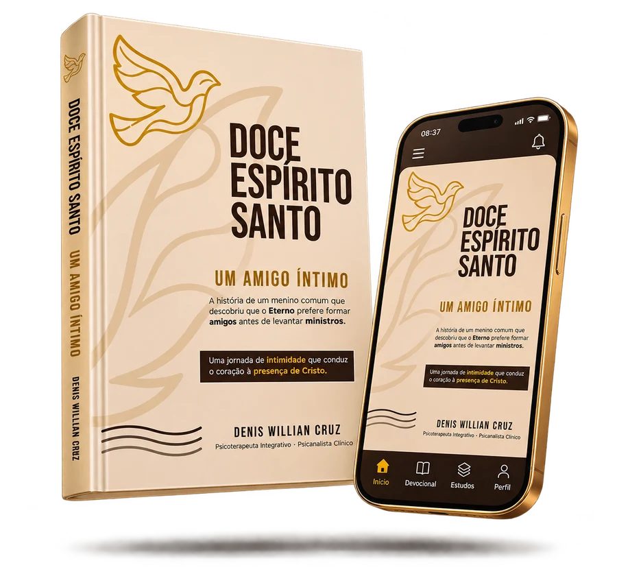

A história de um menino comum que descobriu que o Eterno prefere formar amigos antes de levantar ministros. Uma jornada de intimidade que conduz o coração à presença de Cristo.
Garantia de 7 dias. Leia no celular, no tablet ou no computador.

Este livro é para você que serve, ora e frequenta, mas sente que falta proximidade. Que conhece muito sobre Deus e deseja conhecê-lo como amigo.
Faz tudo certo, mas a oração parece distante e a rotina espiritual, um dever.
Deseja reconhecer o Espírito Santo no dia a dia, não só em momentos especiais.
Quer entender que o Eterno busca amizade antes de desempenho.
"O Eterno prefere formar amigos antes de levantar ministros."
Doce Espírito Santo: Um Amigo ÍntimoPsicoterapeuta Integrativo e Psicanalista Clínico, cristão e estudioso de teologia. Une o cuidado com as emoções ao caminho da fé, ajudando pessoas a viverem uma espiritualidade mais próxima, leve e verdadeira.
Pagamento único, sem mensalidade
Quero o meu e-bookVocê recebe o acesso logo após a confirmação do pagamento.
Garantia de 7 dias. Se o livro não for para você, peça o reembolso em até 7 dias após a compra e devolvemos 100% do valor.
Logo após a confirmação do pagamento, você recebe o acesso para ler no celular, no tablet ou no computador.
No celular, no tablet ou no computador. O seu progresso e o seu diário espiritual ficam salvos na sua conta.
Não. Esta oferta é do e-book digital, com narração em áudio.
O devocional está em preparação. Quem compra o e-book fica sabendo em primeira mão quando ele for lançado.
Você tem 7 dias de garantia. Se o livro não for para você, basta pedir o reembolso nesse prazo.
Fale direto comigo pelo WhatsApp.
Por R$ 27, comece hoje uma jornada que leva o seu coração da rotina para a amizade com Deus.
Quero o meu e-book